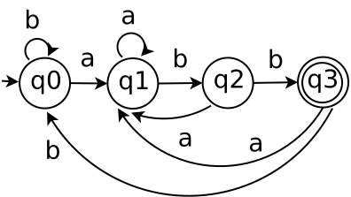

Diagrama a bloques del proceso de construcción de un analizador léxico
Presentación de los pasos para la codificación del analizador léxico. La etapa de análisis se puede llamar, como: Analizador léxico, Escaner o reconocedor de tokens.
Un ejemplo de construcción de un analizador léxico
Se puede construir el escaner de la siguiente manera:

Continuación del ejemplo:
Se continua con el ejercicio:
Se miniminiza la parte de las palabras clave, cómo se muestra a continuación::
Tabla dónde se minimiza el autómata de las palabras clave.
Tabla del AFD mínimo del ejercicio.
Existen diferentes formas para implementar un analizador léxico. Algunas de las cuales son las siguientes:
Analizador léxico con manejo de tabla
El siguiente pseudocódigo es para implementar la función SigCar().
Implementación por medio de una lista enlazada.

El siguiente pseudocódigo es la programación de la tabla de transiciones del AFD mínimo.
| Token | Estados | car | Transición δ |
|---|---|---|---|
| ↑ return | q0 | r | q1 |
| r↑eturn | q1 | e | q2 |
| re↑turn | q2 | t | q3 |
| ret↑urn | q3 | u | q4 |
| retu↑rn | q4 | r | q5 |
| retur↑n | q5 | n | q22 |
| return↑ | q22 | - | q22 |
Se = Estado de error
Sa = Estado de aceptación
Tabla de transiciones = δ[Estados, car]
Las otras dos formas son: Analizador léxico con codificación directa y Analizador léxico codificado a mano.
Ejemplo de construcción de analizador léxico
Aplicando el algoritmo de subconjuntos. Se tiene la siguiente expresión regular:
a*(a|b)aa = {aaaa, abaa, aaa, ... }
Se aplica la construcción de Thompson, usando los modelos:
El AFN se obtiene uniendo los modelos de Thompson:

Para obtener el AFD no mínimo se aplica el algoritmo de subconjuntos.
cerr-ε({1}) = {1, 2, 4, 5, 6, 8} = q0
q0 = {1, 2, 4, 5, 6, 8}
Se tiene que el vocabulario es:
Σ = {a, b}
Se aplica la operación de movimiento por los símbolos del vocabulario, se aplica para a desde q0:
q0 = {1, 2, 4, 5, 6, 8}
cerr-ε(mov(q0,a)) = cerr-ε({3, 7}) = {3, 7, 2, 4, 5, 6, 8, 10, 11, 12} = q1
q1 = {3, 7, 2, 4, 5, 6, 8, 10, 11, 12}
Se aplica la operación de movimiento por los símbolos del vocabulario, se aplica para b desde q0:
cerr-ε(mov(q0,b)) = cerr-ε({9}) = {9, 10, 11, 12} = q2
q2 = {9, 10, 11, 12}
Se aplica la operación de movimiento por los símbolos del vocabulario, se aplica para a desde q1:
q1 = {3, 7, 2, 4, 5, 6, 8, 10, 11, 12}
cerr-ε(mov(q1,a)) = cerr-ε({3, 7, 13}) = {3, 7, 13, 2, 4, 5, 6, 8, 10, 11, 12, 14} = q3
q3 = {3, 7, 13, 2, 4, 5, 6, 8, 10, 11, 12, 14}
Se aplica la operación de movimiento por los símbolos del vocabulario, se aplica para b desde q1:
cerr-ε(mov(q1,b)) = cerr-ε({9}) = {9, 10, 11, 12} = q2
Se aplica la operación de movimiento por los símbolos del vocabulario, se aplica para a desde q2:
q2 = {9, 10, 11, 12}
cerr-ε(mov(q2,a)) = cerr-ε({13}) = {13, 14} = q4
q4 = {13, 14}
Se aplica la operación de movimiento por los símbolos del vocabulario, se aplica para b desde q2:
cerr-ε(mov(q2,b)) = cerr-ε({}) = Φ
Se aplica la operación de movimiento por los símbolos del vocabulario, se aplica para a desde q3:
q3 = {3, 7, 13, 2, 4, 5, 6, 8, 10, 11, 12, 14}
cerr-ε(mov(q3,a)) = cerr-ε({3, 13, 15}) = {3, 13, 15, 2, 4, 5, 6, 8, 14, 16} = q5
q5 = {3, 13, 15, 2, 4, 5, 6, 8, 14, 16}
Se aplica la operación de movimiento por los símbolos del vocabulario, se aplica para b desde q3:
cerr-ε(mov(q3,b)) = cerr-ε({9}) = {9, 10, 11, 12} = q2
Se aplica la operación de movimiento por los símbolos del vocabulario, se aplica para a desde q4:
q4 = {13, 14}
cerr-ε(mov(q4,a)) = cerr-ε({15}) = {15, 16} = q6
q6 = {15, 16}
Se aplica la operación de movimiento por los símbolos del vocabulario, se aplica para b desde q4:
cerr-ε(mov(q4,b)) = cerr-ε({}) = Φ
Se aplica la operación de movimiento por los símbolos del vocabulario, se aplica para a desde q5:
q5 = {3, 13, 15, 2, 4, 5, 6, 8, 14, 16}
cerr-ε(mov(q5,a)) = cerr-ε({3, 7, 15}) = {3, 7, 15, 2, 4, 5, 6, 8, 10, 11, 12, 16} = q7
q7 = {3, 7, 15, 2, 4, 5, 6, 8, 10, 11, 12, 16}
Se aplica la operación de movimiento por los símbolos del vocabulario, se aplica para b desde q5:
cerr-ε(mov(q5,b)) = cerr-ε({9}) = {9, 10, 11, 12} = q2
Se aplica la operación de movimiento por los símbolos del vocabulario, se aplica para a desde q6:
q6 = {15, 16}
cerr-ε(mov(q6,a)) = cerr-ε({}) = Φ
Se aplica la operación de movimiento por los símbolos del vocabulario, se aplica para b desde q6:
cerr-ε(mov(q6,b)) = cerr-ε({}) = Φ
Se aplica la operación de movimiento por los símbolos del vocabulario, se aplica para a desde q7:
q7 = {3, 7, 15, 2, 4, 5, 6, 8, 10, 11, 12, 16}
cerr-ε(mov(q7,a)) = cerr-ε({3, 7, 13}) = {3, 7, 13,} = q8
q8 = {3, 7, 13, 2, 4, 5, 6, 8, 10, 11, 12, 16}
Se aplica la operación de movimiento por los símbolos del vocabulario, se aplica para b desde q7:
q7 = {3, 7, 15, 2, 4, 5, 6, 8, 10, 11, 12, 16}
cerr-ε(mov(q7,b)) = cerr-ε({}) = Φ
Se aplica la operación de movimiento por los símbolos del vocabulario, se aplica para a desde q8:
q8 = {3, 7, 13, 2, 4, 5, 6, 8, 10, 11, 12, 16}
cerr-ε(mov(q8,a)) = cerr-ε({3, 7, 13}) = {3, 7, 13, 2, 4, 5, 6, 8, 10, 11, 12, 16} = q8
Se aplica la operación de movimiento por los símbolos del vocabulario, se aplica para b desde q8:
cerr-ε(mov(q8,b)) = cerr-ε({9}) = {9, 10, 11, 12} = q2
Se obtiene el AFD no mínimo de la siguiente forma:
El ejemplo del árbol
(a|b)*abb = {aabb, ...}

| Estados | a | b |
|---|---|---|
| q0 | q1 | q0 |
| q1 | q1 | q2 |
| q2 | q1 | q3 |
| q3 | q1 | q0 |
La tabla se puede programar con un switch, como se muestra a continuación:
class EstadoSwitch {
public static void main(String args[]) {
String estado = "q1";
char c;
c = 'a';
switch(estado) {
case "q0":
if(c == 'a')
System.out.println("Estado es q1");
else
System.out.println("Estado es q0");
break;
case "q1":
if(c == 'a')
System.out.println("Estado es q1");
else
System.out.println("Estado es q2");
break;
case "q2":
if(c == 'a')
System.out.println("Estado es q1");
else
System.out.println("Estado es q3");
break;
case "q3":
if(c == 'a')
System.out.println("Estado es q1");
else
System.out.println("Estado es q0");
break;
default:
System.out.println("Estado de error");
}
}
}